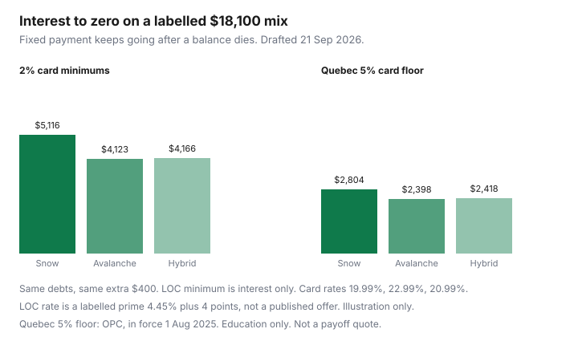

Personal Finance · Canada
Debt Snowball vs Avalanche in Canada: Pick the Method You Will Finish
Households argue snowball versus avalanche on forums while a 20% card keeps revolving. The method that retires the balance is the one you will still be running in month eight. Avalanche (highest interest rate first) usually pays less interest. Snowball (smallest balance first) hands you a finished account sooner. A hybrid does one small win, then switches to the rate order. This page runs all three on one labelled Canadian mix of cards and an unsecured line of credit, and it treats Québec’s minimum-payment floor as a pacing fact.
Disclosure: Nothing on this page is a debt-settlement, payday, or credit-repair offer. Those are a poor fit for a payoff worksheet, and we do not present them. This is education, not credit counselling, insolvency advice, or a promise about your score. Confirm every rate and minimum on your own statement.
Key takeaways
- Write every balance with its rate, minimum formula, limit, and lender before you pick a religion about the method.
- On the labelled mix, avalanche saved about $993 of interest versus snowball when card minimums were 2% and the line of credit was interest-only. Both used the same extra $400.
- Hybrid (clear the $1,200 card, then attack the highest rate) landed within about $44 of pure avalanche and produced a finished card in month 3.
- Québec’s credit-card minimum is at least 5% of the balance from 1 August 2025. That floor shortened the labelled timelines and shrank the gap. It does not apply, by itself, to a line of credit.
- Keep the total payment fixed after a balance hits zero. Spending the freed minimum is how either method quietly stops.
List every balance with interest rate, minimum, and lender
A method without a list is a mood. Pull the latest statement for each card and the line of credit. Record the balance, the purchase APR (cash-advance APR is often higher — use the rate that matches the balance you actually carry), the minimum formula, the credit limit, and whether a pre-authorized payment already hits a chequing account. Promotional rates need their expiry date. A “0% balance transfer” that becomes 21% in November is a November problem, not a personality win.
The illustration below is not a product and not your file. Rates on the cards are in the range of widely posted Canadian purchase rates (RBC’s agreement-change materials set a standard purchase rate of 20.99% on listed retail cards; your cardholder agreement governs). The line-of-credit rate is RBC Prime of 4.45%, as published on RBC’s line-of-credit page when this was drafted on 21 Sep 2026, plus a hypothetical 4.00 percentage-point spread. Banks often set that spread at application and do not post one number for everyone. Prime itself follows the Bank of Canada overnight target, held at 2.25% on 2 September 2026.
| Debt | Balance | Rate | Month-1 interest |
|---|---|---|---|
| Small card | $1,200 | 19.99% | $20 |
| Retail card | $2,400 | 22.99% | $46 |
| Main card | $9,500 | 20.99% | $166 |
| Unsecured line of credit | $5,000 | 8.45% labelled | $35 |
Avalanche math: why highest rate usually wins on total interest
Avalanche sends every dollar above the minimums to the highest rate still open. Here that is the 22.99% retail card, then the 20.99% main card, then the 19.99% small card, then the 8.45% line. The model charges interest monthly, pays each account’s minimum, then aims a fixed household payment at that order. When a balance hits zero, its old minimum stays inside the payment. You do not give yourself a raise.
Card minimums in the first run are 2% of the balance or the interest, whichever is higher, with a $10 floor. The line of credit minimum is interest only, which is the pattern the Financial Consumer Agency of Canada warns about: paying only the interest means the principal never falls. Month-1 minimums on this mix are about $297. Add the extra $400 and the fixed payment is about $697.
Under those rules avalanche reached zero in 32 months and charged about $4,123 of interest. Snowball, which clears smallest balance first (small card, retail card, line of credit, then the big main card), took 34 months and about $5,116. Same debts, same payment, about $993 more interest, because snowball spends months retiring the cheaper line while the 20.99% card is still large.

Snowball psychology: when small wins keep middle-aged households going
Snowball’s defenders are describing behaviour, and the behaviour is real. A finished card in month 3 (the $1,200 balance, in this model) is easier to believe than a six-month grind on a retail card that still shows a balance. If you have quit two previous payoff attempts in month four, a plan that is $993 cheaper on a spreadsheet and abandoned in May is the expensive plan.
Use snowball when you already know you need the early zero, and write down the interest you are choosing to pay. Then protect the method: no new charges on the cards you are clearing, and the payment stays $697 after the first win. The payday transfer is where that $400 has to come from. If it only exists in a good month, neither method is the problem.
Hybrid approach: clear one small card then switch to avalanche
Hybrid is the peace treaty. Clear the $1,200 card first, then point the extra dollars at 22.99%, then 20.99%, then the line. On the 2% model that finished in 32 months — the same as pure avalanche — and cost about $4,166, roughly $44 more than avalanche and about $950 less than full snowball. You still get the month-3 win. You do not spend the next year prepaying an 8.45% line while a 21% card sits there.
The rule that makes hybrid work: the “one small card” is one card, not every balance under $3,000. After that zero, the sort is by rate.
Québec minimum payment rules as a pacing factor
The Office de la protection du consommateur states that, from 1 August 2025, a credit-card minimum must be at least 5% of the balance owing. The climb started at 2% in August 2019 and rose by half a point each 1 August. Cards opened in the last several years were already at 5%. A contract may already require more than 5%; an issuer cannot unilaterally amend you above the contract just because the floor moved. The OPC’s own illustration: on a $1,000 balance at 19.9%, minimum-only at the old 2% was about $3,000 of credit charges over more than 25 years; at 5% the same debt was a bit more than $440 over about 6 years. Paying the statement in full still beats both.
That floor is a credit-card rule (Consumer Protection Act, s. 126.1). It is not, by itself, a line-of-credit rule. The second model keeps the line interest-only and lifts card minimums to 5%. Month-1 minimums jump to about $690, so the fixed payment with the same $400 extra is about $1,090. Avalanche: 19 months, about $2,398 interest. Snowball: 20 months, about $2,804. Hybrid: 19 months, about $2,418. Québec does not repeal the rate order. It makes both paths shorter and the dollar gap smaller, because the cards are already forced to retire principal faster. If you live in Québec and your cash flow cannot meet the new minimum, the OPC points to free budget consultations at consumer associations — that is a public service, not a product on this page.
Measure progress monthly without shame spirals
One row per debt, updated the day statements close: balance, rate, minimum paid, extra paid, and whether you added new charges. A rising balance means the method is theatre. Look monthly, not nightly. Nightly balance-checking is how people “borrow back” from the card they cleared on Tuesday.
Also track the thing the method does not fix: new spending. Avalanche on a card you are still using for groceries is a revolving door. If a lower-rate line is part of the plan, the behaviour rules live in line of credit versus cards. If you are tempted to invest the extra $400 while these rates are still open, read the rate-gap order before you open a trading app.
Sources & date stamps
- OPC, minimum payment on a credit card — at least 5% of the balance owing; page last update 1 August 2025. Communiqué of 15 July 2025 on the final step from 4.5% to 5% and the $1,000 / 19.9% illustration (used 21 Sep 2026).
- FCAC, lines of credit — interest usually from the day you withdraw; paying only interest does not retire principal (used 21 Sep 2026).
- Bank of Canada — overnight target held at 2.25% on 2 September 2026; next scheduled decision 28 October 2026.
- RBC Royal Credit Line page — RBC Prime 4.450% displayed; unsecured rate is variable with prime and set from your file, not published as one spread (used 21 Sep 2026).
- Labelled payoff arithmetic on this page — monthly interest, fixed total payment, card minimum 2% or 5%, line interest-only. Not your lender’s formula.
Frequently asked questions
Does avalanche always cost less interest in Canada?
On a fixed payment that stays constant after a balance hits zero, highest-rate-first costs less interest than smallest-balance-first. In the labelled mix on this page the gap is about $993 under a 2% card-minimum model and about $406 when Quebec's 5% card floor is used. Your statement rates and minimum formula will move the dollars.
What is the hybrid method?
Clear one small balance for a finished win, then switch the extra payment to the highest rate still open. On the labelled 2% model that path finished in the same 32 months as pure avalanche and cost about $44 more interest.
How does Quebec's minimum payment change the pace?
From 1 August 2025 the Consumer Protection Act requires a credit-card minimum of at least 5% of the balance owing. In the labelled model that higher floor shortened both methods and shrank the interest gap. The line-of-credit minimum was still modelled as interest only, which is the FCAC warning pattern and is not the Quebec card rule.
Should I roll old minimums into the extra payment?
Yes, if the goal is less interest. The illustration keeps the household payment fixed, so a finished card's old minimum stays pointed at the next debt. Spending that freed minimum is how a mathematically fine plan stalls.
Is this a debt-settlement or credit-repair pitch?
No. This is a payoff-order worksheet. We do not recommend payday loans, debt-settlement firms, or paid credit repair. If you cannot make a minimum, Quebec's consumer-protection office points people to free budget consultations at consumer associations. Elsewhere, start with your bank's hardship options and a non-profit credit counsellor you can verify.